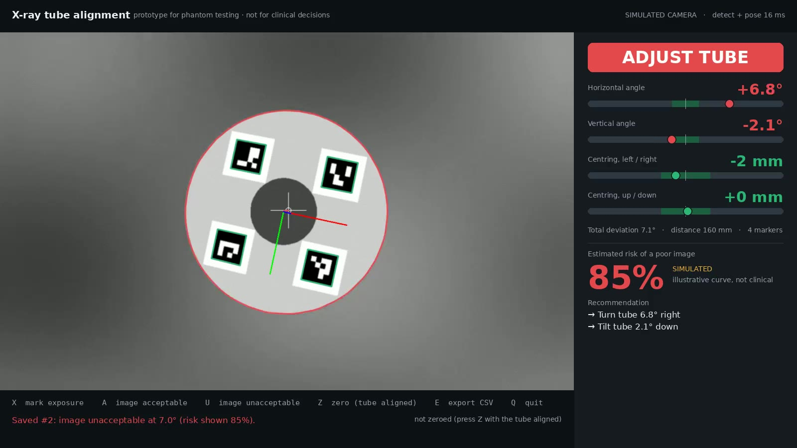

Dental X-ray positioning · Python / OpenCV · proof of concept for phantom testing
Tube-to-ring alignment from a USB camera: working prototype, measured
ArUco markers on the positioning ring, a calibrated camera on the tube, and one 3D pose solved from all ring markers together. It shows the angular deviation live with red/green guidance and corrections, an estimated-risk display (clearly SIMULATED), and acceptable/unacceptable feedback logged to SQLite and CSV.
RMS angle error, whole ring, 144 known poses
same frames, one marker at a time
tilt direction flipped (ring) · single marker:
detection + pose per 1280×800 frame
What the operator sees

−7° horizontal: ADJUST TUBE, corrections listed, simulated risk shown.

Corrected: ALIGNED; X then A saved the exposure as acceptable.
What is built and runs
- Live USB detection: ArUco markers with sub-pixel corners; works with 2–4 markers visible.
- Camera calibration: printable ChArUco board, live capture, saved
camera.json. - 3D pose of the whole ring (SQPnP + LM refinement), not per marker.
- Guidance: horizontal / vertical angle and centring bars with tolerance bands, plus plain corrections ("Turn tube 7.2° left").
- Risk display: 7° → 85% (the brief's example), always labelled SIMULATED; refitted from your verdicts after 20 or more.
- Feedback: X marks an exposure; A or U saves the verdict with angles, centring, distance and tracking quality (SQLite, CSV export).
- Zeroing removes the camera's mounting offset (Z key).
- Included: source, 13 tests, setup README, marker sheet, demo video, simulated-camera mode.
Why one pose from the whole ring
Near alignment is where a single marker fails
A small square seen almost face-on fits two mirror-image tilts nearly equally well, and an aligned tube sees the markers face-on. In a still-pose test at −7.0°, one marker averaged (risk display 85% → ). The whole ring averaged , with frame-to-frame spread.Feedback loop, as recorded in the demo

Tube drifts to 7°: X then U saves the exposure as unacceptable, with the risk shown.
Every verdict is stored with the raw angles, centring, distance, markers seen and reprojection error. Once 20 or more verdicts with both outcomes exist, the curve is refitted to them and the label changes from SIMULATED to FITTED (n).
Accuracy figures: synthetic camera with known ground truth (method on page 2). Phantom testing only; not for clinical decisions.1 / 2